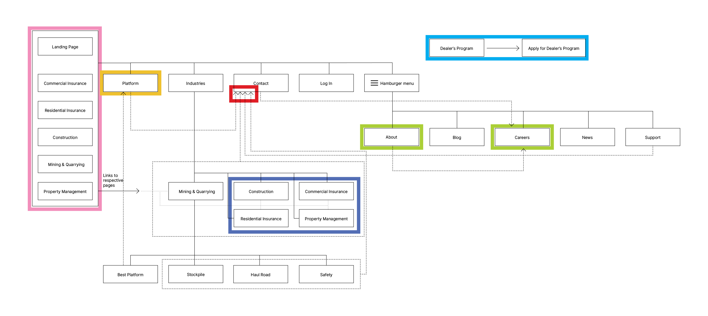

Airware Redesign
UI / UX, Product Design, Visual Design
I redesigned a feature of a KPCB company's product. I was able to focus on any disciplinary area that I was strongest with and I chose to do a visual redesign.
Timeline: 1 Week

Context
Airware is a SAAS platform that provides aerial information for commercial
drones. Focuses on providing service to Mining and Quarrying, Construction,
Commercial Insurance, Residential Insurance, and Property Management.
The Problems?
After looking at Airware’s website and product description, I
understood where it was heading and its potential in the market.
After going through the website and having other users look at the
website, I realized that the tone and visual language of the website
were confusing.
Although this is not a direct product of Airware, it connects consumers to the product, which I chose to redesign. Since Airware sells a service, it is essential that the consumer/user understands the service before going into the actual product, which can be done through the website. The way to obtain this service is through the website and accessible through the contact page.
I believe that Airware already has the content and information needed, but a website, such as Airware’s, needs to have clear expectations. By having visual clutter and unclear hierarchy it distracts from otherwise important information. Thinking of the user, who might be of a less tech-savvy background, it led me to the conclusion that having a distinct, clear visual language will help connect the user to the end product in a more positive manner.
User Painpoints

Tabular Language
The Tabular Language is slightly confusing as it redirects to another page. Using the slanted
parallelagram buttons read more as tabs than buttons, should have a more ‘tab-like’ function.
Form should follow function.
Broken Functionality
There is a broken button on the page. Although this is an IT issue, it seems like an overwhelming
amount of information is being handled, therefore creating hecticness in the backend of the
website.
Inconsistent Modular Pages
The Mining & Quarrying pages had analytics modules, each
with their own page afterwards explaining the modules further.
It differed from the Construction, Commercial Insurance,
Residential Insurance, and Property Management modules,
where they did not have their own respective pages. Having an
inconsistency can lead the user to be confused when exploring
the other industries in comparison to the Mining & Quarry page.
Dealership and the Footer
There is information that is specific to only the footer and not seen anywhere else on the page.
By redesigning with a clearer visual hierarchy in mind I feel that redesigning the footer and
header, might organize
the sections that are uncounted for.
Same Content Different Pages
The About section and Career
section were in the same
hamburger menu, yet there is a
button that redirects the user to
the Career page. This seems like
an unnecessary flow because the
Career page should already be
seen in the hamburger menu that
was displayed on the About page.
The Contact Page
About 10 of the pages redirect to the Contact page. Because the contact page is the only way to get
in touch with the company. I think bridging the bond between the customer and the company will
decrease the frustration one might have when interacting with the website.
Final Design!


Prototype in Action!